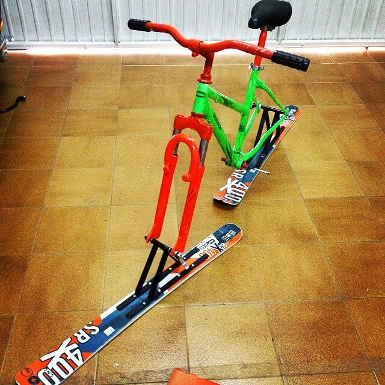

If you have just landed here, I guess you already know my professional skills. If not, check them at my Linkedin profile or my Github.
Welcome to my 'unconventional' resume. If you have arrived here, let me explain something to you about who I am beyond a developer. That is a Work In Progress project, so please don't be very critical with me :)
Personal projects
The first thing that you need to know about me is that I love to create stuff. I love to start new challenges and I am one of those people who think that if you want something you have to go for it, that impossible is nothing. And I take this mantra with me everywhere.
Some examples of that are:
- When I wanted a surfboard, but I was thinking that price in the store was too high. I just bought the materials and tried to make it myself. I had a lot of hope in that project, but not having the proper tools at home made it impossible to complete. I mess it up and all my hope turned into frustration, but you always learn from your experiences! It made me analyze what I did wrong and I will not make the same mistakes in the future :)
- Another personal project I developed (this time successfully), was creating what I call a ski-bike. At one point I found myself with a broken bike and a pair of useless skis. I designed a plan, I got all the tools and I materialized my thoughts. I learned quite a bit from this project as well. 
- What's next? I am planning about building my own skateboard, I want to replicate an actual surfboard but with wheels, I only need to find the proper piece of timber.
As you may have deducted now, surfing is something I love, not only the sport but also all the vibes that surround it. Sadly I am not pretty good at it, so I decided to create an Instagram account where I uploaded all the pictures I took while my friends still in the water but I was exhausted already. Check my pictures here :)
Hobbies
Talking about my hobbies, I like sports in general, but running, biking, longboarding, skiing, and surfing are what I like the most. I have even made a couple of short-distance triathlons, I have skied in the Rockie Mountains in Canada, and I have been able of surfing in one of the most famous spots in the world (Snapper Rocks). All this make me very very proud.
Another thing I like to do in my free time (apart from Netflix what everyone enjoys), is playing Playstation with my friends. I am more a Call of Duty guy, but I will be happy to challange you into a FIFA match whenever.
Traveling is part of my DNA, since I discovered it I can not stop doing it. I have visited plenty of different counties and cultures, which make me value things in another way. Right now, Africa is the only continent that I have not visited yet. I have been living in Australia for more than a year (I have plenty of fun stories to tell you about it) and in Canada for almost a year (I spent the first wave of the pandemic there). Both these trips have been life-changing but the travel that has impacted me the most was the time when I went to Moscow on my own.
Travels
Since I got my first income, I started traveling (as well as getting my Spotify subscription, yep! I love music as well). I have been traveling quite a lot around Spain, and visiting a few countries all over Europe as well. Some of the countries I have visited are: Portugal, Andorra, France, UK, Switzerland, Italy, Malta, Germany, Hungary (I even attended to Sziget festival there, what a nice experience), Netherlands, and Russia.
As I never studied abroad and I always thought that languages are such an important tool. I decided to save the money and go to Australia to learn English and have a life-time experience (luckily, the company I was working for at the moment offered me to keep working together, 100% remotely).
I first arrived to Australia (Feb 2017) and spent the very first week Couchsurfing. I still being infinite thankful to that person that helped me then.
I was down under for less than 3 months when (doing stupid things) I broke my ankle. The doctors put my leg on a cast, and it was not until 2 weeks later that they told me that I needed surgery. That moment is when I decided to go back home (temporarily). I had surgery in Spain, had a little bit of rehab, and as soon as I could I went back to Aus, I had visa for more than a year then and I was not going to renounce to it.
Breaking my leg so far from home made me change from a kid into a man. Going to the hospital in a foreign language, crossing the world (literally) on crutches, having the courage to return to Australia when I could barely stand on my feet, ... All that thing made me be the man I am right now.
Running is something I have always liked, and not being able to do it was horrible to me (maybe if I were able I would choose to stay on the sofa, but not even having the chance is what was annoying me). Then I saw a couple of documentaries on TV talking about the relation o nutrition and injures recovering. So that made me think, I changed my diet and (I don't know if it really worked, or if it was my desire for getting better) after some weeks I was running again. You may be indifferent about that, but what I want to say is that when I really want something, I go for it and get it, no matter what.
Some more remarkable experiences I had down there are:
- On the first date with who now is my girlfriend, we (despite we both don't like much planes) decided to do Skydiving in Cairns.
- I drove a jeep through the beach in Fraser Island.
- Around one year after my surgery, I ran the Sydney Half Marathon, getting really close to my personal record on that distance.
- I spent my last month in the country on a rented van, traveling all around. Among all the places that I visited, I went to Uluru (such a beautiful and mystic place), after 2/3 days of driving across the desert.
To finish my amazing trip to the other side of the world, I spent 1 month traveling about Indonesia, getting to know the culture and learning from their non-stressed pace of life.
After a long time living the Australian lifestyle I felt like Barcelona was not the place for me, things in the company I was working were not going well, and the opportunity to go to Canada appeared. So I decide to take that opportunity and bring my English to the next level (as well as living another life-time experience).
CANADA WORK IN PROGRESS...
All the trips I have made were awesome, and I would not change a single detail of them but after (around) 3 years traveling, I am looking forward to settle down and have a little bit more stability.
More trips are about, to come. Please stay tuned.
Languages
As I have said, knowing different languages gives you one of the most powerful skills: the ability to communicate.
Here are the languages I am able to say more than two words in a row.
- Spanish & Catalan: I was born in Barcelona and I have been spending my first +20years of my life here, so I have both of them as my mother tongue.
- English: I have been studying English for so long that I can not even remember when I started doing it. Plus, my +2 years living in Australia + Canada gave me the confidence to handle any conversation with anyone in that language :)
- Franch & German: I studied French for 2 years at primary school, and its similarity with Catalan made me able to catch it. But only two years of school for learning a language is pretty far from mastering it... I have still work to do here. About German, I studied an introductory course for a year during my university years, it is the language I understand and can speak less (of all listed above) but I know enough for moving around Berlin understanding the signs and even order at restaurants. At least I am not afraid of the language anymore (you have to admit that when you don't have a clue of German it can sound frightening).
Me as a coworker
You may be wondering... What can you expect from me when we work together?
I believe that a good atmosphere in the workplace is the key to achieve success and to be motivated. That is why I always try to be in a good mood and give the best out of myself in order to draw a smile on my colleges' faces. .
I am a curious, cheerful, responsible, and disciplined person. I have experience working in both, teams and solo. Actually, I count with quite a bit of remote working experience.
Hope you enjoyed
If you have reached the end of this website, thanks for spending your time reading about me, it means a lot :) If despite that you still want to contact me, please feel free to mail me at guillemmartinezconejos@gmail.com.